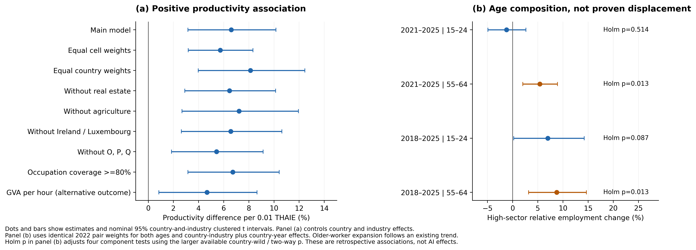

AI exposure, software work and employment in European regions
European regional employment, with annual, quarterly and monthly evidence shown separately. All charts start in 2022.
Exploratory regional observatory Updated 25 November 2026 · Free official sources · Our THAIE calculation
The core regional analysis covers the same 208 NUTS-2 regions across 27 EU countries. Select countries, regions, ages and sex within the annual panel. Quarterly and monthly national sources provide separate higher-frequency evidence; Sweden remains a supplementary case.
Annual European data use 2022 annual employment = 100. Actual monthly data use November 2022 = 100. Quarterly data use Q4 2022 = 100. No annual averages are converted into monthly observations. Coverage and employment definitions differ across the source-specific panels.
How do exposure and age intersect as employment changes?
The research asks whether highly exposed economic activities show different employment paths, especially for labour-market entrants. The Stanford Canaries Dashboard provides the visual reference, with a US payroll sample and occupation-specific exposure. All indices and quintiles are rebuilt from our collected official European data and our own THAIE scores.
Software development is an important case, but an occupation is different from the information and communication industry. A software developer can work outside that industry. We distinguish exact national software occupations, broader software-related groups, ICT professionals, and regional exposure averages.
M · Methods
A fixed baseline, with the source grain preserved
Annual indices divide observed employment by the source-consistent 2022 annual count. Monthly indices divide by observed November 2022 employment. Quarterly indices divide by Q4 2022 employment. All charts begin in 2022; full pre-period source data remain retained for separate DID estimation. UK annual occupational windows end in June and are labelled accordingly. Missing or suppressed observations remain unavailable.
THAIE uses the 2025 task-capability benchmark applied to 2022 occupational composition. Occupational quintiles rank the available scored occupations equally; monthly Swedish regional quintiles rank counties using their fixed 2022 employment-weighted exposure. These are different units of exposure. One- and two-digit Eurostat occupation scores are coarse means of linked three-digit scores. Ambiguous Swedish occupational crosswalks are excluded, rather than forcibly allocated.
Occupation-based panels retain the same complete occupation support over 2020–2025, or 2020–2024 for Sweden, for women and men within each geography and age group. This improves comparability but makes small-country and narrow-age coverage selective. Source sex categories are labelled women and men; they do not measure gender identity. Swedish annual occupation statistics introduce model-imputed occupations from 2023, an important provider-side break rather than an imputation created by this project.
Requested comparisons and what the acquired free sources actually support
Requested feature
Supported evidence
Boundary
Monthly, from 2020
Swedish counties, actual employment by age and sex
All occupations, grouped by regional exposure; not software employment
European occupation exposure quintiles
Annual Eurostat national occupation tables
ISCO1 broad ages or ISCO2 ages 15–64; no monthly occupational cells
Software developers
UK SOC2020 2134; Sweden SSYK2512
Annual, exact occupation series lack the requested age-by-month cross-tabulation
Software-related age profiles
Sweden native SSYK251, annual by county, age and sex
Broader than software developers, not interchangeable with SSYK2512
Additional regional software data
Finland ISCO251, annual regional counts by sex
Broader software/application group; no detailed age split
22–25, 26–30, 31–34, 35–40, 41–49, 50+
Actual source bands are displayed in the controls
Exact requested cut-offs are not acquired; no single-age allocation or relabelling
Occupation fixed, five exposure strata
Age paths within a native occupation
A single fixed-score occupation cannot be divided into five exposure quintiles
UK in regional Eurostat panels
New ONS extract displayed separately through June 2026
Not merged with incompatible EU age panels; classification and area changes are flagged
Show the requested age definitions without substituting them
22–25 · 26–30 · 31–34 · 35–40 · 41–49 · 50+
All six exact requested definitions are unavailable jointly with monthly occupation and regional sex counts in the acquired sources. The controls below use observed bands only. The monthly Swedish young group is 20–24; the annual Swedish young group is 16–24. They are not the same population.
Start with the European annual regional overview, then occupational age and sex comparisons. Quarterly evidence and monthly country sources are separate panels. Software occupations are source-specific. Swedish evidence is supplementary.
R · Results
Open the evidence relevant to each question
Results are folded by design. Every explorer includes its frequency, exposure unit and population. Download the current chart data or SVG from its chart controls.
01 · Europe-wide annual overview · 208 NUTS-2 regions
These ranks measure the disclosed and mapped part of regional employment. The support screen is a sensitivity check, not a workforce-coverage threshold; original quintile cutoffs remain fixed. Inspect every region’s occupational support.
The full descriptive cohort has 208 NUTS-2 regions. The 135-region support sensitivity uses the same ages and frozen quintile definitions. Country and individual-region views are subsets. Incomplete public observations remain unavailable; broad age totals overlap.
02 · Annual European occupational evidence · Age and sex
03 · Quarterly evidence · Available national sources
04 · Monthly regional evidence · United Kingdom
05 · Occupational categories · Annual country sources
Europe-wide regional coverage first. The default requests monthly European NUTS-2 coverage and states explicitly where observations remain unavailable. Switch to the observed annual European panel or the newly collected UK monthly payroll series. Software occupations remain separate source selections; payroll totals are not software jobs.
06 · Supplementary monthly case · Sweden
Monthly regional exposure comparisons do not identify the exposure of the individual workers being counted. No causal AI interpretation is attached to the November 2022 marker.
07 · Supplementary annual case · Sweden
The occupational sample is restricted to deterministic SSYK3-to-ISCO3 links. The broad native group 251 is ambiguous at this level and remains outside these quintile totals, while its native age profile is shown separately below.
08 · Statistical evidence and robustness
The strongest retained association concerns productivity, not a demonstrated AI displacement effect. Across 511 country-industry observations in EU27, a 0.01 higher THAIE is associated with 6.60% higher real value added per worker after country and industry fixed effects, using 2022 employment weights. Its nominal two-way clustered 95% interval is 3.15% to 10.15%, p=0.00065, partial weighted R²=0.054.
Comparison
Estimate
Inference
Interpretation
Exposure and productivity
+6.60% per 0.01 THAIE
Two-way p=0.00065
Cross-sectional association, not an AI productivity gain
Older employment in high sectors, short window
+5.41%
Country wild p=0.0003
Expansion follows a pre-existing trajectory
Youth/older ratio, high sectors
−6.27% short; −1.63% long
Wild p=0.0055; 0.2432
Pre-period sensitive; no repaired short-window two-way p
Regional Q5 versus Q1–Q4 age ratio
+1.97%
Wild p=0.3885
No detected relative decline in the prior supported regional sample
In the expanded retrospective 320-row coefficient inventory, the productivity association has BH q=0.0427 but Holm p=0.2076. Rows include repeated baselines and dependent sensitivities, not 320 independent preregistered hypotheses. Conditional on content-only exposure E, the incremental THAIE coefficient is not significant. Full correction families, null results and limits remain in the downloadable report.

Existing statistical review, 24 November 2026. Annual country-industry analysis, separate from the newly added monthly regional explorer.Download publication tables and figures
D · Discussion
Four findings and their implications
These findings summarise the earlier annual analyses reviewed on 24 November 2026. They use the specific country-industry and regional samples reported below. The newly displayed monthly and quarterly curves remain descriptive evidence.
1 · AI exposure is concentrated in more productive economic activities
Across 511 country-industry observations in 27 EU countries, a 0.01 higher THAIE is associated with 6.60% higher real value added per worker after country and industry fixed effects and 2022 employment weighting. The nominal two-way clustered 95% interval is 3.15% to 10.15%, with p = 0.00065 and partial weighted R² = 0.054. This is the strongest retained structural association.
The result places employment adjustment in economically productive activities, making entry opportunities and skill development relevant policy concerns. It does not establish that AI raised productivity. In the expanded retrospective model inventory, BH q = 0.0427 but Holm p = 0.2076; incremental THAIE significance also disappears conditional on content-only exposure. The finding therefore remains exploratory.
2 · A falling youth-to-older employment ratio partly reflects older-worker expansion
In the short-window high-exposure-industry comparison, employment among ages 55–64 rises relatively by 5.41% (country wild-bootstrap p = 0.0003), while the corresponding change for ages 15–24 is −1.20% (p = 0.4064). The decomposition shows why a declining age ratio cannot, by itself, be interpreted as youth job losses.
Older-worker expansion is consistent with a pre-existing trajectory. Its additional long-window change falls to +0.18% after a common linear industry trend is included (p = 0.8822). Policy monitoring should therefore distinguish youth hiring, older-worker retention and workforce ageing. These results do not identify AI complementarity to experience as the causal mechanism.
3 · Evidence of additional youth employment weakness depends on the counterfactual
With a common linear industry trend, the long-window youth estimate is −6.12% (country wild-bootstrap p = 0.0130; Holm p = 0.0390 within the three trend diagnostics). This is a conditional signal of relative youth employment weakness. The model assumes that a linear trend across the pandemic period provides a suitable counterfactual, and it was selected retrospectively.
Broader comparisons do not establish a uniform regional decline. Without the linear trend, the long-window youth-to-older ratio estimate is −1.63% (p = 0.2432). In the earlier 19-country, 205-region Q5-versus-Q1–Q4 model, the ratio changes by +1.97% (p = 0.3885). Non-significance does not prove no effect. Together, these results motivate testing entry-level hiring and occupation-specific adjustment using credible adoption timing and adequate pre-period data, rather than treating exposure alone as proof of displacement.
4 · Regional DID and identification tests do not establish an AI causal effect
A new retrospective analysis compares regional THAIE Q5 with Q1–Q4 using three annual pre-period observations (2020–2022) and three post-period observations (2023–2025). The balanced sample contains 203 NUTS-2 regions in 19 identifying countries. Region and country-by-year fixed effects are included, with fixed 2022 employment weights. The annual post-2023 indicator approximates the hypothesised November 2022 event; it cannot locate an exact monthly discontinuity.
Outcome
Relative DID change
Country wild-bootstrap p
Holm p, three primary outcomes
Youth employment, ages 15–24
+2.69%
0.0746
0.2238
Older employment, ages 55–64
+1.51%
0.4150
0.8300
Youth-to-older employment ratio
+1.34%
0.4978
0.8300
None of the three primary outcomes is significant at 5% under the 9,999-draw restricted country wild bootstrap. The age-ratio estimate is algebraically equivalent to a stacked age DDD with the same paired weights and saturated age-specific fixed effects; this equivalence was checked numerically.
Identification diagnostics use the stricter 2018–2025 balanced sample of 193 regions in 18 countries. Joint pretrend p-values are 0.3694 for youth, 0.3542 for older workers and 0.7050 for their ratio. A pre-AI placebo split at 2020 yields p-values of 0.6376, 0.6409 and 0.6360. That placebo overlaps COVID and is only a confounding diagnostic. Failure to reject these tests does not verify parallel trends or rule out economically meaningful effects.
The unadjusted long-window youth estimate is +2.75% (p = 0.0476), but its Holm p across the nine effect specifications is 0.4284. With a group-specific linear trend, the youth estimate is +3.55% (p = 0.2065). Thus a claim of regional youth displacement is not robustly supported here. These regional estimands differ from the industry comparisons in findings 2 and 3.
Exposure is not randomly assigned and actual AI adoption is not observed. Public occupational coverage and historical regional-boundary consistency remain unresolved. Concurrent regional industrial shocks, migration and the limited number of informative country clusters remain identification concerns. The evidence supports a statement about conditional employment differences, not a demonstrated causal AI effect or proof of no effect. A credible monthly causal design still requires comparable adoption information and sufficiently long pre- and post-period observations.
Occupational-support and inference audit
Regional scores condition on disclosed, mapped occupations. Some regions have only one contributing occupation, including DEB2 in Q5. A mapping fraction of 100% within disclosed cells is not full workforce coverage. The descriptive 208-region cohort is retained with provisional ranks; its support-screened sensitivity contains 135 regions and preserves the original quintile cutoffs.
Annual regional DID
Regions
Youth change
Wild-bootstrap p
Youth/older ratio change
Wild-bootstrap p
Unfiltered balanced sample
203
+2.689%
0.0746
+1.345%
0.4978
At least 50 published mapped occupations
107
+1.876%
0.2783
+1.556%
0.5498
The 50-occupation screen diagnoses sparse support; it does not certify employment coverage. Both samples keep frozen 2022 quintile cutoffs. Statistical significance is not stable across weighting years. Country-CR1 t intervals and restricted wild-bootstrap p-values use different approximations: the primary youth t interval excludes zero although its wild p is 0.0746. The latter is used for the stated significance assessment. Joint pretrend rows report joint p-values without attaching a single coefficient or confidence interval.
No individual records are published. Source-level suppressed cells remain suppressed. Code and aggregates are separately versioned; provider revisions and classification changes may alter future updates.